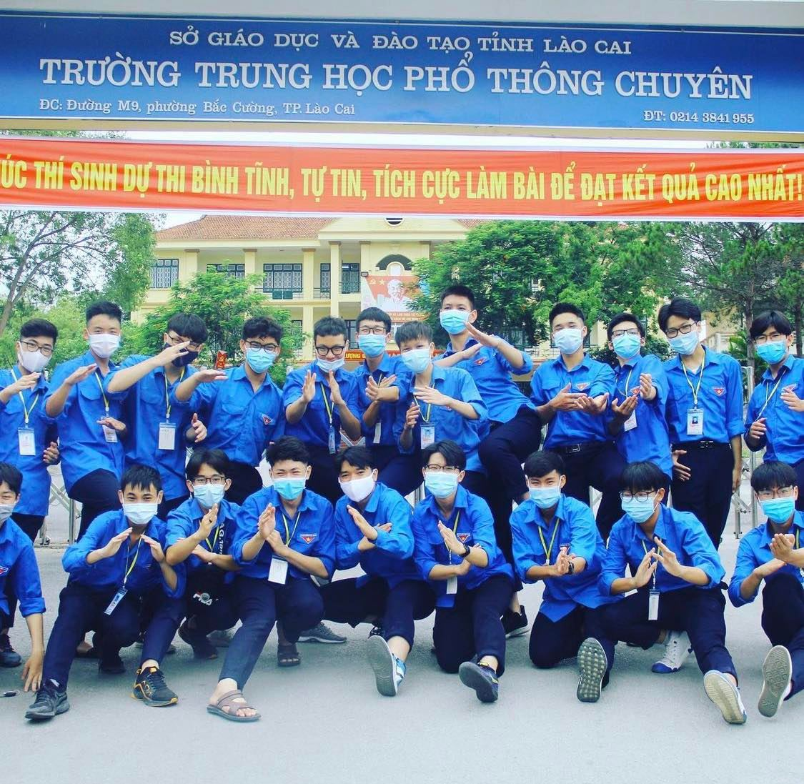
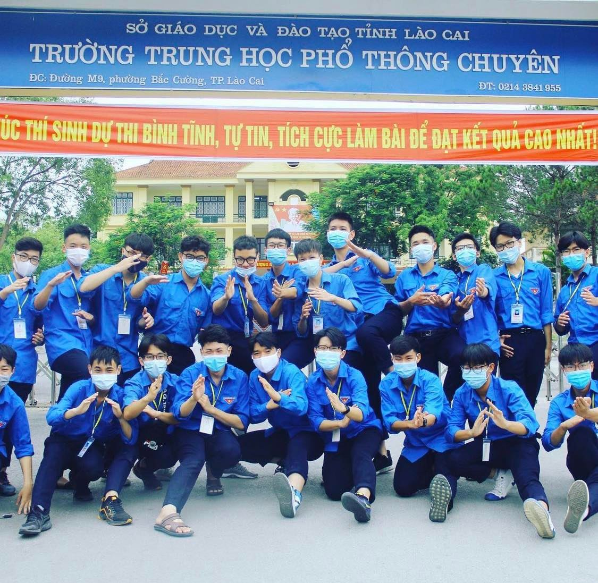
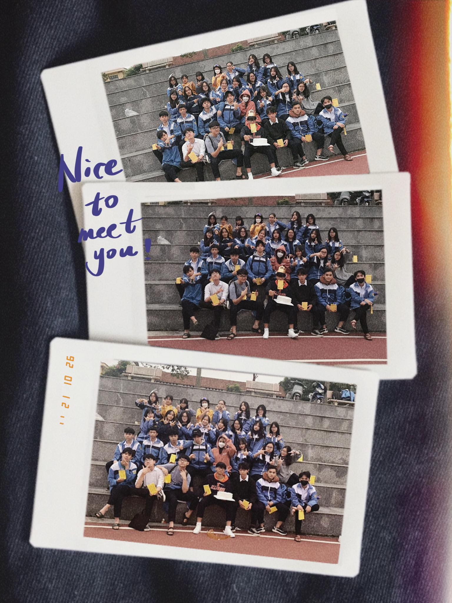
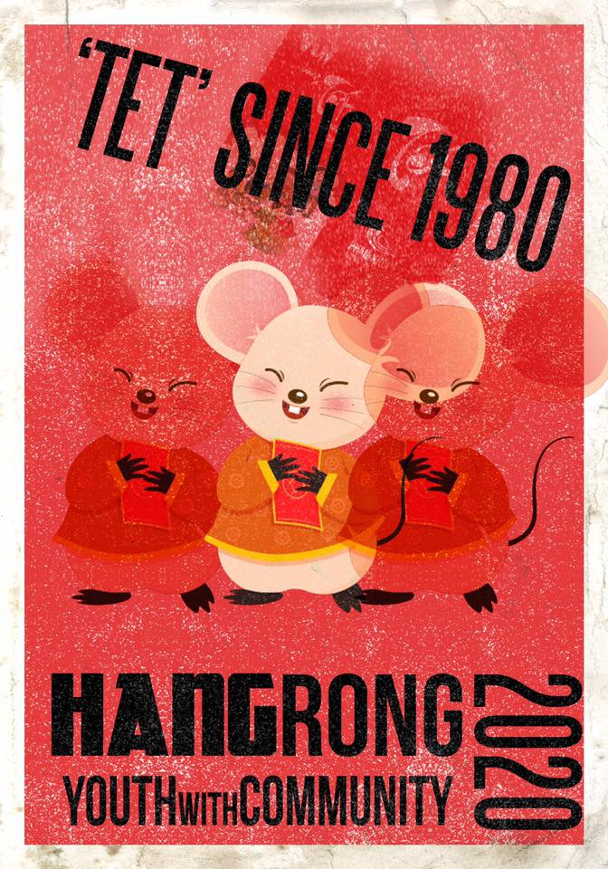
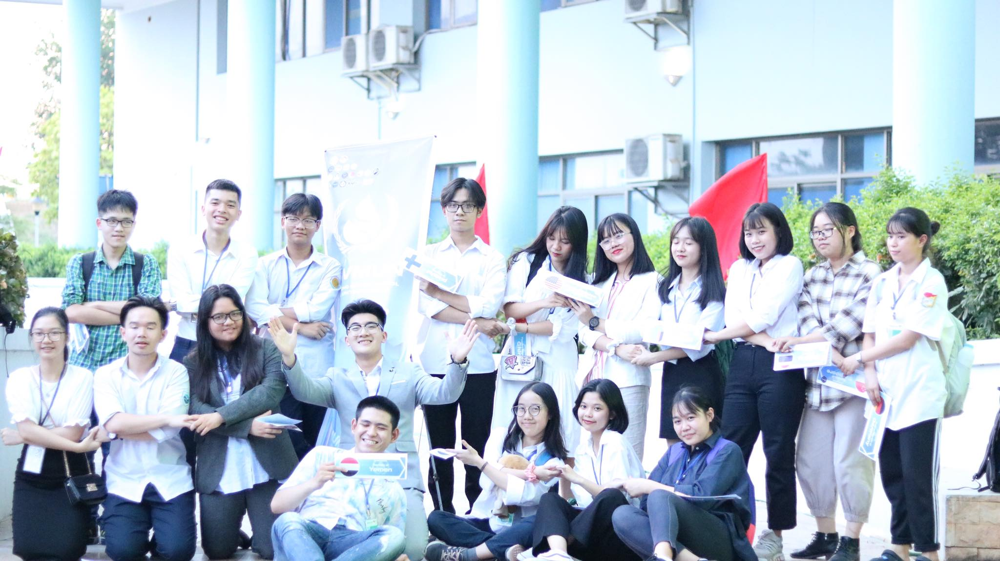

January 1st, 2021
Before we proceed, allow me to demonstrate the rationale behind my dedication to extracurricular activities. I fully comprehend the fleeting finitude of youth and the importance of spending which such that I would bear no regrets in old age. Therefore, I've decided to dedicate a great portion of my teenage days to volunteering, working in non-profit organizations, helping people and etc... It not only brought me memories to cherish for decades to come, but also a bulk of practical experience in working with people, conducting myself and other soft skills.
 

A volunteering program by CLC YOLO organized to ease the experience of participants in the Lao Cai's Highschool For Gifted Students' Entrance Exam. I was a volunteer, tasked with providing various small assistances to nervous children and parents alongside controlling the flow of traffic during rush hours before and after the test.
The program was much more than fun, it helped me see the pleasure in helping others, in committing to a noble cause and part forged my direction for months to come.

An annual event by CLC Link to welcome 10th graders and help acquaint them to the school environment. As Shoto's team leader, I took on the mission of connecting the fledglings connect with eachother and open up. To which end I found great success.
The 12HC rewarded me with, first and foremost, great memories but also treasured skills in leadership, pressure management and dealing with people.

An annual charity event held by a youth organization for which I am a core member as a graphic designer, YWC holds a particularly firm spot in my heart because it's among the very first activities I had joined in my highschool years. Every year, the organization opens a selection round for volunteers all over the province to open up gift shops, vendors selling Tet merchandise and other handcrafted products, but without added prices. The proceeds of the event all goes to a charity of choice and in 2020, it was donated to the local children's hospital to help every bit we can.

My first ever Model United Nations conference. Joining as Canada's delegate in the FAO discussion board, I found the experience quite challenging and thus no less interesting. Though my command of the required language - English was satisfactory
, the real difficulty lied in my reluctance to speak up and a dearth of courage. The event changed my character in many ways. I entered as a shy, kept-to-self person and left at the other end with the confidence fitting of a leader.